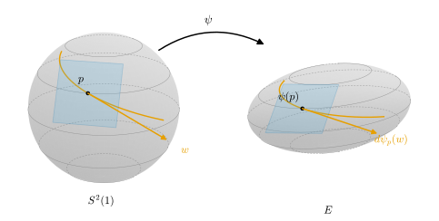

6.4 사상의 미분
이 절의 목표
- 곡면 사이의 매끄러운 사상의 미분 \(d\varphi_p\)와 곡면 위 함수의 미분 \(df_p\)를 곡선으로 정의하고, 그것이 잘 정의된 선형사상임을 증명할 수 있다.
- 매개화에 대한 \(d\varphi_p\)의 행렬이 좌표 표현의 야코비 행렬임을 보이고, 두 가지 방법(좌표와 \(\R^3\))으로 계산할 수 있다.
- 연쇄법칙과 곡면의 역함수 정리를 증명하고, 정칙곡면 안으로 가는 매끄러운 단사 사상의 전미분이 단사이면 그것이 매개화임을 보일 수 있다.
선수 지식
동기
6.3절에서 곡면 사이의 매끄러운 사상을 정의했다. 이제 그런 사상을 미분하고 싶다. \(\R^n\)에서 전미분 \(DF(p)\)는 \(F(p + h) - F(p)\)를 \(h\)에 대한 선형사상으로 근사한 것이었다(정의 2.1.1). 곡면 위에서는 \(p + h\)가 곡면을 벗어나므로 이 식을 그대로 쓸 수 없다. 그러나 따름정리 2.2.2에는 다른 길이 있었다. \(DF(p)v\)는 \(p\)를 속도 \(v\)로 지나는 아무 곡선 \(\alpha\)를 골라 \((F \circ \alpha)'(0)\)으로 계산할 수 있다.
곡면에서는 이 길이 열려 있다. 접벡터 \(w \in T_pS_1\)은 어떤 곡선 \(\alpha\)의 속도이고, \(\varphi \circ \alpha\)는 \(S_2\) 위의 곡선이므로 그 속도는 \(T_{\varphi(p)}S_2\)에 있다(그림 6.4.1). 그래서 “\(w\)를 \((\varphi \circ \alpha)'(0)\)으로 보내는” 사상을 미분으로 삼는다. 확인할 것은 두 가지다. 곡선 \(\alpha\)를 어떻게 고르든 같은 값이 나오는가? 그리고 그 사상이 선형인가?

미분의 정의
이 절에서 \(S_1, S_2, S_3\)은 정칙곡면이고 \(O \subseteq S_1\)은 \(S_1\)에서 열린집합이다. \(\alpha\colon (-\varepsilon, \varepsilon) \to S_1\)이 \(\alpha(0) = p \in O\)인 곡선이면, \(\alpha^{-1}(O)\)가 \(0\)을 포함하는 열린집합이므로 \(\varepsilon\)을 줄여 \(\alpha\)의 값이 \(O\)에 있다고 해도 된다. 이렇게 줄여도 \(\alpha'(0)\)은 바뀌지 않는다.
정의 6.4.1 (사상의 미분, differential). \(\varphi\colon O \to S_2\)가 매끄럽고 \(p \in O\)라 하자. \(w \in T_pS_1\)에 대하여 \(\alpha(0) = p\), \(\alpha'(0) = w\)인 \(O\) 위의 곡선 \(\alpha\)를 골라
로 둔다. 사상 \(d\varphi_p\colon T_pS_1 \to T_{\varphi(p)}S_2\)를 \(p\)에서 \(\varphi\)의 미분(differential)이라 한다. 같은 방식으로 매끄러운 함수 \(f\colon O \to \R\)에 대해 \(df_p(w) = (f \circ \alpha)'(0)\)으로 두고 \(df_p\colon T_pS_1 \to \R\)를 \(p\)에서 \(f\)의 미분이라 한다.
이 정의가 뜻을 가지려면 세 가지를 확인해야 한다. \(\varphi \circ \alpha\)가 \(S_2\) 위의 곡선이라서 그 속도가 \(T_{\varphi(p)}S_2\)에 있는가, 값이 \(\alpha\)의 선택에 무관한가, 선형인가. 다음 명제가 모두 답한다.
명제 6.4.2 (미분은 잘 정의된 선형사상이다). \(\varphi\colon O \to S_2\)가 매끄럽고 \(p \in O\)라 하자. 매개화 \(\mathbf{x}_1\colon U_1 \to S_1\)과 \(\mathbf{x}_2\colon U_2 \to S_2\)를 \(\mathbf{x}_1(q) = p\), \(\mathbf{x}_1(U_1) \subseteq O\), \(\varphi(\mathbf{x}_1(U_1)) \subseteq \mathbf{x}_2(U_2)\)가 되게 잡고 \(\hat\varphi = \mathbf{x}_2^{-1} \circ \varphi \circ \mathbf{x}_1\)을 좌표 표현이라 하자. \(\mathbf{x}_1\)의 변수를 \((u, v)\), \(\mathbf{x}_2\)의 변수를 \((\bar u, \bar v)\)로 쓴다.
- (a) \(\alpha\)가 \(O\) 위의 곡선이고 \(\alpha(0) = p\)이면 \(\varphi \circ \alpha\)는 \(S_2\) 위의 곡선이다. 따라서 \(d\varphi_p(w) \in T_{\varphi(p)}S_2\)이다.
- (b) \(w = a\,\mathbf{x}_{1,u}(q) + b\,\mathbf{x}_{1,v}(q)\)이면
이다. 따라서 \(d\varphi_p(w)\)는 \(\alpha\)의 선택에 무관하고, \(d\varphi_p\)는 선형사상이며, 기저 \((\mathbf{x}_{1,u}, \mathbf{x}_{1,v})\)와 \((\mathbf{x}_{2,\bar u}, \mathbf{x}_{2,\bar v})\)에 대한 행렬은 \(D\hat\varphi(q)\)이다.
- (c) 매끄러운 함수 \(f\colon O \to \R\)에 대하여 \(df_p(a\,\mathbf{x}_{1,u} + b\,\mathbf{x}_{1,v}) = a\,(f \circ \mathbf{x}_1)_u(q) + b\,(f \circ \mathbf{x}_1)_v(q)\)이고, \(df_p\)는 선형이다.
증명 아이디어: 곡선을 좌표로 쓰면 \(\varphi \circ \alpha = \mathbf{x}_2 \circ \hat\varphi \circ \beta\)이다. 여기에 연쇄법칙을 두 번 쓰면 결과가 \(\beta'(0) = (a, b)\)에만 달려 있음이 보인다.
증명. 정의 6.3.9 뒤의 설명대로 이런 \(\mathbf{x}_1, \mathbf{x}_2\)는 있다. 명제 6.2.4의 증명처럼 \(\varepsilon\)을 줄여 \(\alpha\)의 값이 \(\mathbf{x}_1(U_1)\)에 있다고 하자. \(\beta = \mathbf{x}_1^{-1} \circ \alpha\)는 매끄럽고(보조정리 6.2.3) \(\beta(0) = q\), \(\beta'(0) = (a, b)\)이다(명제 6.2.4(b)). \(\hat\varphi\)는 명제 6.3.10(b)에 의해 매끄럽다.
(a) \(\varphi \circ \alpha = \varphi \circ \mathbf{x}_1 \circ \beta = \mathbf{x}_2 \circ \hat\varphi \circ \beta\)는 열린집합 사이의 매끄러운 사상 셋의 합성이므로 매끄럽고, 값이 \(S_2\)에 있으며 \(0\)에서 \(\varphi(p)\)를 지난다. 정의 6.2.1에 의해 그 속도는 \(T_{\varphi(p)}S_2\)의 원소다.
(b) 연쇄법칙(따름정리 2.2.2와 정리 2.2.1)을 두 번 쓰면
\[ (\varphi \circ \alpha)'(0) = D\mathbf{x}_2(\hat q)\,D\hat\varphi(q)\,\beta'(0) = D\mathbf{x}_2(\hat q)\begin{pmatrix} \bar a \\ \bar b \end{pmatrix} = \bar a\,\mathbf{x}_{2,\bar u}(\hat q) + \bar b\,\mathbf{x}_{2,\bar v}(\hat q) \]
이다. 우변은 \((a, b)\)에만, 곧 \(w\)에만 달려 있다. \(w \mapsto (a, b)\)는 \(D\mathbf{x}_1(q)\colon \R^2 \to T_pS_1\)의 역사상이므로 선형이고, 따라서 \(d\varphi_p = D\mathbf{x}_2(\hat q) \circ D\hat\varphi(q) \circ D\mathbf{x}_1(q)^{-1}\)은 선형사상의 합성이다. 행렬에 대한 주장은 (6.4.2)를 읽은 것이다.
(c) \(f \circ \alpha = (f \circ \mathbf{x}_1) \circ \beta\)이고 \(f \circ \mathbf{x}_1\)은 매끄럽다(명제 6.3.6). 연쇄법칙에서 \((f \circ \alpha)'(0) = D(f \circ \mathbf{x}_1)(q)\,(a, b)^{\mathsf{T}}\)이다.
공식 (6.4.2)는 매개화를 써서 계산하지만, 결과는 정의 (6.4.1)의 값이므로 매개화를 어떻게 골라도 같다. 다른 매개화 \(\mathbf{y}_1, \mathbf{y}_2\)를 쓰면 좌표 표현은 \(\mathbf{y}_2^{-1} \circ \varphi \circ \mathbf{y}_1 = h_2^{-1} \circ \hat\varphi \circ h_1\)(\(h_1, h_2\)는 매개변수 변환)이 되고, 야코비 행렬은 \(Dh_2^{-1}\,D\hat\varphi\,Dh_1\)로 바뀐다. 행렬은 바뀌지만 그것이 나타내는 선형사상 \(d\varphi_p\)는 그대로다. 이것은 명제 6.3.4의 성분 변환과 정리 1.4.12(행렬의 변환)가 맞물린 결과다.
예 6.4.3 (매개화와 좌표함수의 미분). (a) 예 6.3.12(b)처럼 \(U\)를 평면 조각 \(\tilde U = U \times \{0\}\)으로 보고 \(\tilde{\mathbf{x}}(u, v, 0) = \mathbf{x}(u, v)\)라 하자. \(T_{(q, 0)}\tilde U = \R^2 \times \{0\}\)이고(예 6.2.7(a)), 곡선 \(\alpha(t) = (q + t(a, b),\ 0)\)을 쓰면 \(d\tilde{\mathbf{x}}_{(q, 0)}(a, b, 0) = \tfrac{d}{dt}\big|_{t=0}\mathbf{x}(q + t(a, b)) = D\mathbf{x}(q)(a, b)\)이다. 즉 \(\R^2 \times \{0\}\)을 \(\R^2\)와 같게 보면 \(d\tilde{\mathbf{x}}_{(q,0)} = D\mathbf{x}(q)\)이다. 매개화의 미분을 \(d\mathbf{x}_q\)로 쓰는 교재가 있는 것은 이 때문이다(규약 비교 상자).
(b) 좌표함수 \(u, v\colon \mathbf{x}(U) \to \R\)(예 6.3.7(b))의 미분을 보자. \(u \circ \mathbf{x}(u, v) = u\)이므로 명제 6.4.2(c)에서
이다. 곧 \((du_p, dv_p)\)는 기저 \((\mathbf{x}_u, \mathbf{x}_v)\)의 쌍대기저(정의 1.3.4)이고, 접벡터의 성분을 읽어 내는 선형범함수다. 명제 6.4.2(c)는 \(df_p = (f \circ \mathbf{x})_u\,du_p + (f \circ \mathbf{x})_v\,dv_p\)라고 다시 쓸 수 있다.
미분의 계산
대부분의 사상은 \(\R^3\)의 사상을 곡면으로 제한한 것이다. 그때는 좌표 없이 계산할 수 있다.
명제 6.4.4 (\(\R^3\)의 사상의 제한). \(O' \subseteq \R^3\)이 열린집합이고 \(O \subseteq O'\)이라 하자.
- (a) \(\Phi\colon O' \to \R^3\)이 매끄럽고 \(\Phi(O) \subseteq S_2\)이면 \(\varphi = \Phi|_O\)에 대하여 \(d\varphi_p = D\Phi(p)|_{T_pS_1}\)이다.
- (b) \(F\colon O' \to \R\)가 매끄럽고 \(f = F|_O\)이면 \(df_p(w) = DF(p)w = \inner{\grad F(p)}{w}\)이다.
증명. \(\varphi\)와 \(f\)는 예 6.3.12(a)와 예 6.3.7(a)에 의해 매끄럽다. \(w = \alpha'(0)\)이면 \(\alpha\)는 \(O'\) 안의 곡선이므로 따름정리 2.2.2에서 \((\Phi \circ \alpha)'(0) = D\Phi(p)w\), \((F \circ \alpha)'(0) = DF(p)w\)이다. 마지막 등식은 식 (2.4.3)이다.
예 6.4.5 (높이함수와 거리제곱 함수). (a) 높이함수 \(h_v(p) = \inner{p}{v}\)(예 6.3.7)는 \(F(p) = \inner{p}{v}\), \(\grad F = v\)의 제한이므로 \(d(h_v)_p(w) = \inner{v}{w}\)이다. 따라서 \(d(h_v)_p = 0\)일 필요충분조건은 \(v\)가 \(T_pS\)에 수직인 것이다. 구면 \(S^2(r)\)에서 \((T_pS^2(r))^\perp\)은 \(p\)가 생성하는 직선이므로(식 (6.2.3)), \(v \neq 0\)이면 \(d(h_v)_p = 0\)인 점은 \(p = \pm r\,v/\abs{v}\) 두 개다. 코시-슈바르츠 부등식에서 \(\abs{\inner{p}{v}} \le r\abs{v}\)이므로 이 두 점은 높이의 최댓점과 최솟점이다. \(v = e_3\)이면 북극과 남극이다.
(b) 거리제곱 함수 \(f(p) = \abs{p - p_0}^2\)는 \(\grad F(p) = 2(p - p_0)\)이므로 \(df_p(w) = 2\inner{p - p_0}{w}\)이다. \(df_p = 0\)은 \(p - p_0 \perp T_pS\), 곧 \(p_0\)이 \(p\)에서 \(T_pS\)에 수직인 직선 위에 있다는 뜻이다. 구면에서 \(p_0 = 0\)이면 모든 점에서 \(df_p = 0\)인데, \(f = r^2\)이 상수이므로 당연하다.
검증: verify/v-6-4-differential-of-a-map.py
예 6.4.6 (선형사상의 제한). \(L\colon \R^3 \to \R^3\)이 선형이고 \(L(S_1) \subseteq S_2\)이면 명제 6.4.4(a)에서 \(dL_p(w) = Lw\)이다. 특히 \(L(T_pS_1) \subseteq T_{L(p)}S_2\)이다.
- 타원면. \(a, b, c \gt 0\), \(A = \diag(a, b, c)\)라 하고 \(E = A(S^2(1)) = \{x^2/a^2 + y^2/b^2 + z^2/c^2 = 1\}\)이라 하자. 예 6.1.7에서 \(Q\)로 한 논증을 가역 선형사상 \(A\)에 그대로 쓰면 \(A \circ \mathbf{x}\), \(A \circ \tilde{\mathbf{x}}\)가 \(E\)를 덮는 매개화이므로 \(E\)는 정칙곡면이다. \(\psi = A|_{S^2(1)}\colon S^2(1) \to E\)는 역사상 \(A^{-1}|_E\)를 갖는 미분동형사상이고 \(d\psi_p(w) = Aw\)이다(그림 6.4.1). \(d\psi_p\)가 \(T_pS^2(1)\)에서 \(T_{Ap}E\) 위로의 동형사상이므로 \(T_{Ap}E = A(p^\perp)\)이다.
- 회전. \(z\)축에 대한 각 \(\alpha\)의 회전 \(R_{z,\alpha}\)를 \(S^2(r)\)로 제한하면 \(d(R_{z,\alpha})_p(w) = R_{z,\alpha}w\)이다. 북극 \(p = (0, 0, r)\)은 움직이지 않고 \(T_pS^2(r)\)은 \(xy\) 평면이므로, \(d(R_{z,\alpha})_p\)는 \(xy\) 평면의 각 \(\alpha\) 회전이다 [dC §2-4 예 2].
- 대척사상. \(A(p) = -p\)(연습 6.3.1)는 \(dA_p(w) = -w\)이다. \(T_{-p}S^2(r) = (-p)^\perp = p^\perp = T_pS^2(r)\)이므로 \(dA_p\)는 이 평면에서 \(-\id\)다.
검증: verify/v-6-4-differential-of-a-map.py
좌표로도 계산해 보자. 처음 하는 계산이므로 (6.4.2)와 명제 6.4.4, 두 방법의 결과가 같음을 끝까지 확인한다.
예 6.4.7 (반사의 미분을 좌표로). \(xy\) 평면에 대한 반사 \(\sigma(x, y, z) = (x, y, -z)\)를 \(S^2(r)\)로 제한한 것을 보자. 기준 매개화 \(\mathbf{x}\)에 대하여
\[ \sigma(\mathbf{x}(\theta, \varphi)) = (r\sin\theta\cos\varphi,\ r\sin\theta\sin\varphi,\ -r\cos\theta) = \mathbf{x}(\pi - \theta, \varphi) \]
이다. \(\sin(\pi - \theta) = \sin\theta\), \(\cos(\pi - \theta) = -\cos\theta\)이고 \(\pi - \theta \in (0, \pi)\)이기 때문이다. 따라서 \(\mathbf{x}_1 = \mathbf{x}_2 = \mathbf{x}\)로 두면 좌표 표현은 \(\hat\sigma(\theta, \varphi) = (\pi - \theta, \varphi)\)이고 \(D\hat\sigma = \begin{pmatrix} -1 & 0 \\ 0 & 1 \end{pmatrix}\)이다. (6.4.2)에서 \(q = (\theta, \varphi)\), \(\hat q = (\pi - \theta, \varphi)\)라 하면
이다. 명제 6.4.4로 확인하자. \(D\sigma = \diag(1, 1, -1)\)이므로
\[ \begin{aligned} D\sigma\,\mathbf{x}_\theta(q) &= (r\cos\theta\cos\varphi,\ r\cos\theta\sin\varphi,\ r\sin\theta),\\ \mathbf{x}_\theta(\hat q) &= \big(r\cos(\pi - \theta)\cos\varphi,\ r\cos(\pi - \theta)\sin\varphi,\ -r\sin(\pi - \theta)\big)\\ &= (-r\cos\theta\cos\varphi,\ -r\cos\theta\sin\varphi,\ -r\sin\theta) \end{aligned} \]
이고, 과연 \(D\sigma\,\mathbf{x}_\theta(q) = -\mathbf{x}_\theta(\hat q)\)이다. 또 \(\mathbf{x}_\varphi\)는 셋째 성분이 \(0\)이고 \(\sin(\pi - \theta) = \sin\theta\)이므로 \(D\sigma\,\mathbf{x}_\varphi(q) = \mathbf{x}_\varphi(q) = \mathbf{x}_\varphi(\hat q)\)이다. 뜻: 반사는 남북 방향(\(\theta\)가 늘어나는 방향)을 뒤집고 동서 방향은 그대로 둔다. \(\det D\hat\sigma = -1\)의 부호는 7장에서 곡면의 방향을 다룰 때 다시 쓴다.
검증: verify/v-6-4-differential-of-a-map.py
연쇄법칙과 역함수 정리
정리 6.4.8 (연쇄법칙, chain rule). \(\varphi\colon O \to S_2\)와 \(\psi\colon O_2 \to S_3\)가 매끄럽고 \(\varphi(O) \subseteq O_2\)(\(O_2\)는 \(S_2\)의 열린집합)라 하자. 그러면 모든 \(p \in O\)에서
이다. 매끄러운 함수 \(g\colon O_2 \to \R\)에 대해서도 \(d(g \circ \varphi)_p = dg_{\varphi(p)} \circ d\varphi_p\)이다.
증명. \(\psi \circ \varphi\)는 명제 6.3.10(c)에 의해 매끄럽다. \(w \in T_pS_1\)이고 \(\alpha\)가 \(\alpha(0) = p\), \(\alpha'(0) = w\)인 \(O\) 위의 곡선이라 하자. 명제 6.4.2(a)에 의해 \(\beta = \varphi \circ \alpha\)는 \(O_2\) 위의 곡선이고 \(\beta(0) = \varphi(p)\), \(\beta'(0) = d\varphi_p(w)\)이다. 따라서 정의 (6.4.1)을 \(\psi\)와 곡선 \(\beta\)에 쓰면 \(d(\psi \circ \varphi)_p(w) = (\psi \circ \beta)'(0) = d\psi_{\varphi(p)}(\beta'(0)) = d\psi_{\varphi(p)}(d\varphi_p(w))\)이다. \(g\)의 경우도 같다.
따름정리 6.4.9 (미분동형사상의 미분). \(\varphi\colon S_1 \to S_2\)가 미분동형사상이면 모든 \(p\)에서 \(d\varphi_p\colon T_pS_1 \to T_{\varphi(p)}S_2\)는 동형사상이고 \((d\varphi_p)^{-1} = d(\varphi^{-1})_{\varphi(p)}\)이다.
증명. 항등사상의 미분은 항등사상이다(\(\id \circ \alpha = \alpha\)). \(\varphi^{-1} \circ \varphi = \id_{S_1}\)과 \(\varphi \circ \varphi^{-1} = \id_{S_2}\)에 정리 6.4.8을 쓰면 \(d(\varphi^{-1})_{\varphi(p)} \circ d\varphi_p = \id\), \(d\varphi_p \circ d(\varphi^{-1})_{\varphi(p)} = \id\)이다.
역함수 정리는 이 따름정리의 부분적인 역이다. 먼저 정의 2.3.8을 곡면으로 옮긴다.
정의 6.4.10 (곡면 사이의 국소 미분동형사상, local diffeomorphism). \(\varphi\colon O \to S_2\)가 매끄럽고 \(p \in O\)라 하자. \(p\)를 포함하는 \(S_1\)의 열린집합 \(O_p \subseteq O\)가 있어서 \(\varphi(O_p)\)가 \(S_2\)에서 열려 있고, \(\varphi|_{O_p}\)가 \(\varphi(O_p)\) 위로의 전단사이며, 그 역사상 \(\varphi(O_p) \to S_1\)이 매끄러우면, \(\varphi\)를 \(p\)에서 국소 미분동형사상이라 한다. 모든 점에서 그러하면 \(\varphi\)를 국소 미분동형사상(local diffeomorphism)이라 한다.
정리 6.4.11 (곡면의 역함수 정리). \(\varphi\colon O \to S_2\)가 매끄럽고 \(p \in O\)에서 \(d\varphi_p\colon T_pS_1 \to T_{\varphi(p)}S_2\)가 동형사상이면, \(\varphi\)는 \(p\)에서 국소 미분동형사상이다.
이 정리가 말하는 것. 미분이 가역이면 사상 자체가 그 점 근처에서 가역이고 역사상도 매끄럽다. 곡면이 국소적으로 평면과 같으므로(예 6.3.12(b)), 평면의 역함수 정리가 그대로 옮겨 온다.
증명 아이디어: 좌표 표현 \(\hat\varphi\)의 야코비 행렬은 \(d\varphi_p\)의 행렬이므로 가역이다. \(\hat\varphi\)에 \(\R^2\)의 역함수 정리를 쓰고 매개화로 되돌린다.
증명. 명제 6.4.2처럼 \(\mathbf{x}_1(q) = p\), \(\mathbf{x}_1(U_1) \subseteq O\), \(\varphi(\mathbf{x}_1(U_1)) \subseteq \mathbf{x}_2(U_2)\)인 매개화를 잡는다. \(D\hat\varphi(q)\)는 \(d\varphi_p\)의 행렬이므로 가역이다. 정리 2.3.5에 의해 \(q\)를 포함하는 열린집합 \(U_0 \subseteq U_1\)과 \(\hat\varphi(q)\)를 포함하는 열린집합 \(V_0 \subseteq U_2\)가 있어서 \(\hat\varphi|_{U_0}\colon U_0 \to V_0\)이 미분동형사상이다. (\(V_0\)은 \(U_2\)와의 교집합으로 줄여도 된다.)
\(O_p = \mathbf{x}_1(U_0)\)로 두자. \(\mathbf{x}_1\)은 \(U_1\)에서 \(S_1\)의 열린집합 \(\mathbf{x}_1(U_1)\) 위로의 위상동형사상이므로 \(O_p\)는 \(S_1\)에서 열려 있고 \(p\)를 포함한다. 같은 이유로 \(\varphi(O_p) = \mathbf{x}_2(\hat\varphi(U_0)) = \mathbf{x}_2(V_0)\)은 \(S_2\)에서 열려 있다. \(O_p\)에서 \(\varphi = \mathbf{x}_2 \circ \hat\varphi \circ \mathbf{x}_1^{-1}\)은 전단사의 합성이므로 \(\mathbf{x}_2(V_0)\) 위로의 전단사이고, 역사상은 \(G = \mathbf{x}_1 \circ (\hat\varphi|_{U_0})^{-1} \circ \mathbf{x}_2^{-1}\colon \mathbf{x}_2(V_0) \to S_1\)이다. \(G\)가 매끄러움을 명제 6.3.10(a)로 보이자. \(\mathbf{z}(Z) \subseteq \mathbf{x}_2(V_0)\)인 \(S_2\)의 매개화 \(\mathbf{z}\)에 대해 \(G \circ \mathbf{z} = \mathbf{x}_1 \circ (\hat\varphi|_{U_0})^{-1} \circ (\mathbf{x}_2^{-1} \circ \mathbf{z})\)이고, \(\mathbf{x}_2^{-1} \circ \mathbf{z}\)는 매개변수 변환이라 매끄러우므로(정리 6.3.1) \(G \circ \mathbf{z}\)는 매끄럽다.
예 6.4.12 (국소적으로 가역이지만 대역적으로 단사가 아닌 사상). 평면 \(P = \{z = 0\}\)에서 \(\varphi(x, y, 0) = (e^x\cos y,\ e^x\sin y,\ 0)\)을 보자. \(\R^3\)의 매끄러운 사상의 제한이므로 매끄럽고, 매개화 \(\iota(u, v) = (u, v, 0)\)에 대한 좌표 표현은 \(\hat\varphi(u, v) = (e^u\cos v,\ e^u\sin v)\)이다. \(\det D\hat\varphi = e^u\cos v \cdot e^u\cos v - (-e^u\sin v)(e^u\sin v) = e^{2u} \neq 0\)이므로 모든 점에서 \(d\varphi_p\)가 동형사상이고, 정리 6.4.11에 의해 \(\varphi\)는 국소 미분동형사상이다. 그러나 \(\varphi(x, y + 2\pi, 0) = \varphi(x, y, 0)\)이므로 단사가 아니다. 예 2.3.10의 극좌표 사상과 같은 현상이다(\(\hat\varphi\)는 반지름 \(e^u\)의 극좌표 사상이다). 6.5절에서 원기둥을 정칙곡면으로 보인 뒤, 평면을 원기둥에 감는 사상도 같은 성질을 가짐을 본다(연습 6.5.4).
검증: verify/v-6-4-differential-of-a-map.py
역함수 정리의 응용으로, 이미 정칙곡면임을 아는 집합에서는 매개화의 조건 (2)를 확인하지 않아도 된다는 것을 보이자. 예 6.1.7에서 역사상의 식을 구하던 수고를 덜어 준다.
따름정리 6.4.13 (정칙곡면 안으로 가는 단사 사상). \(S\)가 정칙곡면이고 \(U \subseteq \R^2\)가 열린집합이며 \(\mathbf{x}\colon U \to \R^3\)이 매끄럽고 \(\mathbf{x}(U) \subseteq S\)라 하자. \(\mathbf{x}\)가 단사이고 모든 \(q \in U\)에서 \(D\mathbf{x}(q)\)가 단사이면, \(\mathbf{x}(U)\)는 \(S\)에서 열려 있고 \(\mathbf{x}\)는 \(S\)의 매개화다. 즉 조건 (2)가 저절로 성립한다.
증명. \(\tilde U = U \times \{0\}\)과 \(\tilde{\mathbf{x}}(u, v, 0) = \mathbf{x}(u, v)\)를 예 6.4.3처럼 둔다. \(\tilde U\)의 매개화 \(\mathbf{z}\)에 대해 \(\tilde{\mathbf{x}} \circ \mathbf{z} = \mathbf{x} \circ (P_{xy} \circ \mathbf{z})\)가 매끄러우므로 \(\tilde{\mathbf{x}}\colon \tilde U \to S\)는 매끄럽다(명제 6.3.10(a)). 예 6.4.3(a)의 계산에서 \(d\tilde{\mathbf{x}}_{(q,0)}(a, b, 0) = D\mathbf{x}(q)(a, b)\)이므로 \(d\tilde{\mathbf{x}}_{(q,0)}\)은 단사이고, 두 접평면이 모두 2차원이므로 동형사상이다(따름정리 1.2.10(a)). 정리 6.4.11에 의해 각 점 \((q, 0)\)에 열린 근방 \(O_q\)가 있어서 \(\tilde{\mathbf{x}}(O_q)\)가 \(S\)에서 열려 있고 \(\tilde{\mathbf{x}}|_{O_q}\)의 역사상이 매끄럽다(따라서 연속이다).
\(\mathbf{x}(U) = \bigcup_q \tilde{\mathbf{x}}(O_q)\)는 열린집합의 합집합이므로 \(S\)에서 열려 있다. 부분공간 위상의 정의에서 \(\R^3\)의 열린집합 \(V\)가 있어 \(\mathbf{x}(U) = V \cap S\)이다. \(\mathbf{x}\)는 단사이므로 \(V \cap S\) 위로의 전단사이고, 역사상 \(\mathbf{x}^{-1}\)은 각 열린집합 \(\tilde{\mathbf{x}}(O_q)\) 위에서 \(\tilde{\mathbf{x}}|_{O_q}\)의 역사상(의 첫 두 성분)과 같으므로 연속이다(명제 3.2.2). 따라서 조건 (2)가 성립하고, (1)과 (3)은 가정이다.
요약
- 곡면 사이의 매끄러운 사상 \(\varphi\)의 미분은 \(d\varphi_p(\alpha'(0)) = (\varphi \circ \alpha)'(0)\)이다. 곡선의 선택에 무관한 선형사상 \(T_pS_1 \to T_{\varphi(p)}S_2\)이고, 좌표 행렬은 \(D\hat\varphi(q)\)이다(명제 6.4.2).
- 함수의 미분 \(df_p\colon T_pS \to \R\)도 같다. 좌표함수의 미분 \((du_p, dv_p)\)는 \((\mathbf{x}_u, \mathbf{x}_v)\)의 쌍대기저다.
- \(\R^3\)의 사상의 제한이면 \(d\varphi_p = D\Phi(p)|_{T_pS}\), 함수이면 \(df_p(w) = \inner{\grad F(p)}{w}\)이다. 높이함수는 \(v \perp T_pS\)인 점에서 미분이 \(0\)이다.
- 연쇄법칙 \(d(\psi \circ \varphi)_p = d\psi_{\varphi(p)} \circ d\varphi_p\)가 성립하고, \(d\varphi_p\)가 동형사상이면 \(\varphi\)는 \(p\)에서 국소 미분동형사상이다(정리 6.4.11).
- 정칙곡면 안으로 가는 매끄러운 단사 사상의 전미분이 단사이면 그것은 매개화다(따름정리 6.4.13).
다음 절에서는 방정식 \(f(x, y, z) = a\)로 주어진 집합이 언제 정칙곡면인지 묻는다. 기울기가 \(0\)이 되지 않으면 된다는 것이 답이고, 이것으로 원기둥, 타원면, 원환면이 정칙곡면임을 한꺼번에 보인다. 그 접평면은 기울기에 수직인 평면이다.
연습문제
연습 6.4.1 ★ \(\varphi\colon S^2(1) \to S^2(r)\), \(\varphi(p) = rp\)의 미분을 구하고, 모든 점에서 동형사상임을 확인하여라.
풀이
\(\varphi\)는 선형사상 \(p \mapsto rp\)의 제한이므로 예 6.4.6에서 \(d\varphi_p(w) = rw\)이다. \(T_pS^2(1) = p^\perp\)이고 \(T_{rp}S^2(r) = (rp)^\perp = p^\perp\)이므로 \(d\varphi_p\)는 같은 평면의 \(r\)배 사상이고, \(r \neq 0\)이므로 동형사상이다.
연습 6.4.2 ★ 구면 \(S^2(r)\) 위의 함수 \(f(x, y, z) = z\)에 대하여 \(df_p(\mathbf{x}_\theta)\)와 \(df_p(\mathbf{x}_\varphi)\)를 구하여라(\(p = \mathbf{x}(\theta, \varphi)\)). \(df_p = 0\)인 점을 모두 구하여라.
풀이
\(f \circ \mathbf{x} = r\cos\theta\)이므로 명제 6.4.2(c)에서 \(df_p(\mathbf{x}_\theta) = -r\sin\theta\), \(df_p(\mathbf{x}_\varphi) = 0\)이다. 명제 6.4.4(b)로도 \(df_p(\mathbf{x}_\theta) = \inner{e_3}{\mathbf{x}_\theta} = -r\sin\theta\)이다. \(0 \lt \theta \lt \pi\)에서 \(\sin\theta \neq 0\)이므로 \(\mathbf{x}(U)\) 안에는 \(df_p = 0\)인 점이 없다. 구면 전체에서는 예 6.4.5(a)(\(v = e_3\))에서 \(df_p = 0\)인 점은 북극과 남극 \((0, 0, \pm r)\)뿐이다. 두 점은 기준 매개화의 상 밖에 있다.
검증: verify/v-6-4-differential-of-a-map.py
연습 6.4.3 ★ 참인지 거짓인지 판별하고 이유를 대어라. (a) \(d\varphi_p(w)\)의 값은 \(\alpha'(0) = w\)인 곡선 \(\alpha\)의 선택에 따라 달라질 수 있다. (b) 단사인 매끄러운 사상 \(\varphi\colon S_1 \to S_2\)는 모든 점에서 \(d\varphi_p\)가 단사다. (c) 전단사인 국소 미분동형사상은 미분동형사상이다. (d) \(d\varphi_p(T_pS_1) \subseteq T_{\varphi(p)}S_2\)이다.
풀이
(a) 거짓. 명제 6.4.2(b).
(b) 거짓. 비예 6.3.13의 \(\varphi(x, y, 0) = (x^3, y, 0)\)은 단사이지만 좌표 표현 \((u^3, v)\)의 야코비 행렬이 \(u = 0\)에서 계수 \(1\)이므로 \(d\varphi_p\)가 단사가 아니다.
(c) 참. 역사상 \(\varphi^{-1}\)은 각 열린집합 \(\varphi(O_p)\) 위에서 \((\varphi|_{O_p})^{-1}\)과 같으므로(단사성) 그 위에서 매끄럽다. 매끄러움은 국소적 성질이므로 \(\varphi^{-1}\)은 매끄럽다.
(d) 참. 명제 6.4.2(a).
연습 6.4.4 ★ \(S^2(r)\)에서 \(p_0 \neq 0\)이 주어졌을 때 거리제곱 함수 \(f(p) = \abs{p - p_0}^2\)의 미분이 \(0\)인 점을 모두 구하여라.
풀이
예 6.4.5(b)에서 \(df_p = 0 \iff p - p_0 \perp T_pS^2(r) = p^\perp \iff p - p_0 \in \Span\{p\}\)이다. 이것은 \(p_0\)이 \(p\)가 생성하는 직선 위에 있다는 것, 곧 \(p\)가 \(p_0\) 방향의 직선 위에 있다는 것이다. \(\abs{p} = r\)이므로 \(p = \pm r\,p_0/\abs{p_0}\), 두 점이다. 앞의 점은 \(p_0\)에 가장 가까운 점, 뒤의 점은 가장 먼 점이다.
검증: verify/v-6-4-differential-of-a-map.py
연습 6.4.5 ★★ 대척사상 \(A(p) = -p\)의 좌표 표현 \(\hat A(\theta, \varphi) = (\pi - \theta,\ \varphi + \pi)\)(\(0 \lt \varphi \lt \pi\), 연습 6.3.1)를 써서 (6.4.2)로 \(dA_p(\mathbf{x}_\theta)\), \(dA_p(\mathbf{x}_\varphi)\)를 구하고, 예 6.4.6의 \(dA_p = -\id\)와 비교하여라.
풀이
\(D\hat A = \diag(-1, 1)\)이므로 \(\hat q = (\pi - \theta, \varphi + \pi)\)에서 \(dA_p(\mathbf{x}_\theta(q)) = -\mathbf{x}_\theta(\hat q)\), \(dA_p(\mathbf{x}_\varphi(q)) = \mathbf{x}_\varphi(\hat q)\)이다. 이제 \(\hat q\)에서의 편미분을 계산하면
\[ \begin{aligned} \mathbf{x}_\theta(\hat q) &= \big(r\cos(\pi - \theta)\cos(\varphi + \pi),\ r\cos(\pi - \theta)\sin(\varphi + \pi),\ -r\sin(\pi - \theta)\big)\\ &= (r\cos\theta\cos\varphi,\ r\cos\theta\sin\varphi,\ -r\sin\theta) = \mathbf{x}_\theta(q),\\ \mathbf{x}_\varphi(\hat q) &= \big(-r\sin(\pi - \theta)\sin(\varphi + \pi),\ r\sin(\pi - \theta)\cos(\varphi + \pi),\ 0\big)\\ &= (r\sin\theta\sin\varphi,\ -r\sin\theta\cos\varphi,\ 0) = -\mathbf{x}_\varphi(q) \end{aligned} \]
이다. 따라서 \(dA_p(\mathbf{x}_\theta(q)) = -\mathbf{x}_\theta(q)\), \(dA_p(\mathbf{x}_\varphi(q)) = -\mathbf{x}_\varphi(q)\)이고, 이것은 \(dA_p = -\id\)와 같다. 행렬 \(D\hat A\)의 행렬식은 \(-1\)이지만 \(dA_p = -\id\)(2차원에서 행렬식 \(+1\))인 것은 모순이 아니다. 두 기저 \((\mathbf{x}_\theta(q), \mathbf{x}_\varphi(q))\)와 \((\mathbf{x}_\theta(\hat q), \mathbf{x}_\varphi(\hat q))\)가 서로 다르기 때문이다.
검증: verify/v-6-4-differential-of-a-map.py
연습 6.4.6 ★★ (곡면 위의 극값) \(f\colon S \to \R\)가 매끄럽고 \(p\)에서 극댓값을 가지면(\(p\)의 어떤 열린 근방에서 \(f \le f(p)\)) \(df_p = 0\)임을 보여라. 이것으로 \(S^2(1)\) 위에서 \(f(x, y, z) = x + 2y + 2z\)의 최댓값을 구하여라.
풀이
\(w \in T_pS\)와 \(\alpha(0) = p\), \(\alpha'(0) = w\)인 곡선 \(\alpha\)를 잡는다. \(t\)가 작으면 \(\alpha(t)\)는 그 근방에 있으므로 \(f \circ \alpha\)는 \(t = 0\)에서 극댓값을 갖고, 1변수 미적분에서 \((f \circ \alpha)'(0) = 0\), 곧 \(df_p(w) = 0\)이다.
\(f = \inner{p}{v}\), \(v = (1, 2, 2)\)는 높이함수이고, 구면은 컴팩트이므로 최댓값이 있다(정리 3.6.10). 최댓점에서 \(df_p = 0\)이므로 예 6.4.5(a)에서 \(p = \pm v/\abs{v} = \pm(1, 2, 2)/3\)이다. \(f\)의 값은 \(\pm(1 + 4 + 4)/3 = \pm 3\)이므로 최댓값은 \(3\)이다(\(p = (1, 2, 2)/3\)).
검증: verify/v-6-4-differential-of-a-map.py
연습 6.4.7 ★★★ \(S_1\)이 연결(정의 3.7.1)이고 \(\varphi\colon S_1 \to S_2\)가 매끄러우며 모든 \(p\)에서 \(d\varphi_p = 0\)이면 \(\varphi\)는 상수임을 보여라.
힌트
\(\varphi\)가 국소적으로 상수임을 보이고 명제 3.7.16을 쓴다. 좌표 표현의 정의역을 열린공으로 잡는다.
풀이
국소적으로 상수. \(p \in S_1\)에서 명제 6.4.2의 매개화 \(\mathbf{x}_1, \mathbf{x}_2\)를 잡고, \(U_1\)을 \(q = \mathbf{x}_1^{-1}(p)\)를 중심으로 하는 열린공 \(B\)로 줄이자(\(\mathbf{x}_1|_B\)도 매개화다). \(B\)의 모든 점 \(q'\)에서 \(D\hat\varphi(q')\)는 \(d\varphi_{\mathbf{x}_1(q')}\)의 행렬이므로 \(0\)이다. 따름정리 2.2.10에 의해 \(\hat\varphi\)는 \(B\)에서 상수이고, 따라서 \(\varphi = \mathbf{x}_2 \circ \hat\varphi \circ \mathbf{x}_1^{-1}\)은 \(p\)의 열린 근방 \(\mathbf{x}_1(B)\)에서 상수다.
전체에서 상수. \(\varphi\)는 연결공간 \(S_1\) 위의 국소상수함수(값은 집합 \(S_2\))이므로 명제 3.7.16에 의해 상수다. (연결이라는 가정은 필요하다. 두 겹 쌍곡면 \(-x^2 - y^2 + z^2 = 1\)(6.5절)에서 \(z \gt 0\) 쪽에서 \(1\), \(z \lt 0\) 쪽에서 \(-1\)인 함수는 미분이 \(0\)이지만 상수가 아니다.)